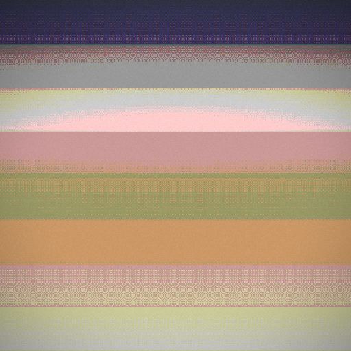
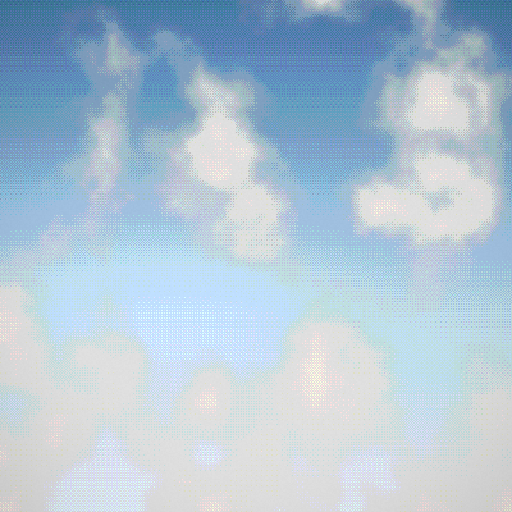
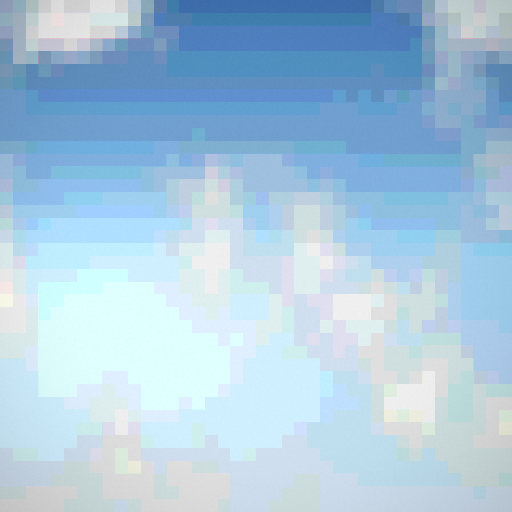

i've been filming the sky for over a decade, it is my meditation.
sit with me and watch the sky go by, a beautiful blue sky.
A library of the released animated skies — slow, glitched sky loops published as numbered editions across chains, and shared on the socials. The live collections are the home of the work; this is the index. New skies land here as they're made.
← back to the generatorThe filmed loops are the source aesthetic. The generator distills them into deterministic, on-chain-storable skies synthesized from a hash — the same meditative, corrupted sky, rebuilt from math. Two engines so far:


